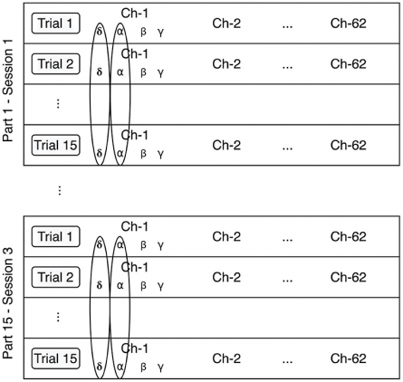
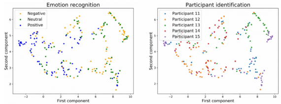

Новый алгоритм многослойной нормализации значительно увеличивает точность распознавания эмоций по сигналу электроэнцефалограммы (ЭЭГ) головного мозга. Нормализация признаков по различным участникам и экспериментам, лежащая в основе метода, позволяет снизить корреляции между распознанными эмоциями и отдельными участниками экспериментов.
Эффективность моделей машинного обучения, связанных с распознаванием эмоций на основе сигналов ЭЭГ, значительно ограничивает неоднородность данных, получаемых от разных пациентов, и даже данных одного и того же пациента, участвующего в нескольких экспериментах. Для решения этой проблемы в настоящее время используются методы, основанные на длительной и сложной калибровке показаний ЭЭГ отдельных пациентов. В новом исследовании предлагается альтернативный подход – алгоритм многослойной нормализации. Точность распознавания эмоций нейронными сетями, обученными с использованием многослойной нормализации, оказывается значительно выше по сравнению с сетями, обученными с использованием пакетной нормализации.
Новый метод, схема которого представлена на рис. 1, состоит в нормализации признаков по отдельным участникам и экспериментам. Для обучения модели исследователи использовали датасет, содержащий видеозаписи 15 пациентов, причем каждый пациент учувствовал в трех экспериментах. В ходе одного эксперимента записывалось по 15 видео с одним пациентом. Всем видеозаписям была предварительно присвоена эмоция присутствующего на ней участника (положительная, отрицательная или нейтральная).
Результаты работы нейронной сети без использования и с использованием многослойной нормализации приведены на рис. 2 и 3 соответственно. Как видно из рисунков, новый метод приводит к сильной локализации каждой из эмоций в распределении. Также происходит значительное снижение корреляций между распознанными эмоциями и отдельными участниками экспериментов. Данные результаты говорят о высокой эффективности метода для решения различных задач распознавания эмоций. Помимо этого, многослойная нормализация может использоваться для распознавания голоса и объектов.
ЭЭГ, в силу низкой стоимости и неинвазивности, является наиболее перспективным инструментом детектирования эмоций. Метод многослойной нормализации открывает новые возможности для распознавания эмоций, используемого в широком классе приложений, включая разработку интерфейсов мозг-компьютер, улучшение алгоритмов интерактивного повествования и диагностику аффективных расстройств.